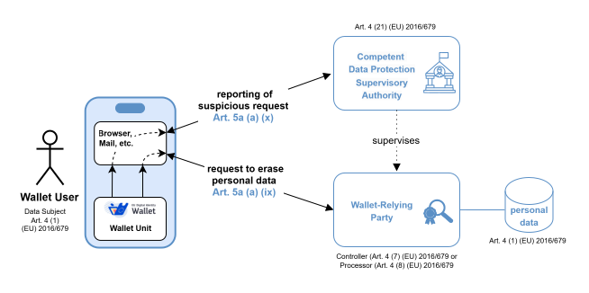

L+M - Requesting erasure of personal data at a wallet-relying party and reporting a wallet-relying party to the competent data protection supervisory authority¶
Version 0.9, created 14 May 2025
1. Introduction¶
1.1 Discussion Paper topic description¶
The present discussion paper discusses how a wallet user can use her wallet unit to request the erasure of personal data at a wallet-relying party and for reporting a relying party to the competent data protection supervisory authority.
The present paper builds upon and recalls (see clause 3) the existing high level requirements from Topic 48 (Blueprint for requesting data deletion to Relying Parties) and Topic 50 (Blueprint to report unlawful or suspicious request of data), before it discusses these topics in clause 4 and clause 5.
The result of the discussions documented in the present paper is the updated set of high level requirements as laid down in clause 6.
1.2 Related risks in the Risk Register¶
Risks considered in Topic_A are also applicable here and additional risks may be added in this discussion paper, if this turns out to be necessary.
1.3 Key words¶
This document uses the capitalised key words 'SHALL', 'SHOULD' and 'MAY' as specified in RFC 2119, i.e., to indicate requirements, recommendations and options specified in this document.
In addition, 'must' (non-capitalised) is used to indicate an external constraint, for instance a self-evident necessity or a requirement that is mandated by an external document. The word 'can' indicates a capability, whereas other words, such as 'will' and 'is' or 'are' are intended as statements of fact.
1.4 Relevant definitions and requirements from (EU) 2016/679¶
Article 2 (4) of (EU) No 910/2014 stipulates that this regulation is without prejudice to the ''General Data Protection Regulation'' (GDPR) (EU) 2016/679 and hence it seems to be appropriate to recall the most relevant stipulations from GDPR here. In particular, the lodging of a complaint to Data Protection Authorities on the grounds of Article 57 (1) (f) of regulation (EU) 2016/679 is a different and independent recourse mechanism from the reporting to a Data Protection Authority provided for in Article 5a (4) (d) (iii) of the regulation (EU) No. 910/2014. This does not prevent a Data Protection Authorities to use in its GDPR-based tasks information gathering from eIDAS-based reports received.
1.4.1 Definitions from (EU) 2016/679¶
Article 4 of (EU) 2016/679 in particular contains the following definitions:
(1) ‘personal data’ means any information relating to an identified or identifiable natural person (‘data subject’); an identifiable natural person is one who can be identified, directly or indirectly, in particular by reference to an identifier such as a name, an identification number, location data, an online identifier or to one or more factors specific to the physical, physiological, genetic, mental, economic, cultural or social identity of that natural person;
(2) ‘processing’ means any operation or set of operations which is performed on personal data or on sets of personal data, whether or not by automated means, such as collection, recording, organisation, structuring, storage, adaptation or alteration, retrieval, consultation, use, disclosure by transmission, dissemination or otherwise making available, alignment or combination, restriction, erasure or destruction;
(5) ‘pseudonymisation’ means the processing of personal data in such a manner that the personal data can no longer be attributed to a specific data subject without the use of additional information, provided that such additional information is kept separately and is subject to technical and organisational measures to ensure that the personal data are not attributed to an identified or identifiable natural person;
(6) ‘filing system’ means any structured set of personal data which are accessible according to specific criteria, whether centralised, decentralised or dispersed on a functional or geographical basis;
(7) ‘controller’ means the natural or legal person, public authority, agency or other body which, alone or jointly with others, determines the purposes and means of the processing of personal data; where the purposes and means of such processing are determined by Union or Member State law, the controller or the specific criteria for its nomination may be provided for by Union or Member State law;
(8) ‘processor’ means a natural or legal person, public authority, agency or other body which processes personal data on behalf of the controller;
(9) ‘recipient’ means a natural or legal person, public authority, agency or another body, to which the personal data are disclosed, whether a third party or not. However, public authorities which may receive personal data in the framework of a particular inquiry in accordance with Union or Member State law shall not be regarded as recipients; the processing of those data by those public authorities shall be in compliance with the applicable data protection rules according to the purposes of the processing;
(10) ‘third party’ means a natural or legal person, public authority, agency or body other than the data subject, controller, processor and persons who, under the direct authority of the controller or processor, are authorised to process personal data;
(11) ‘consent’ of the data subject means any freely given, specific, informed and unambiguous indication of the data subject's wishes by which he or she, by a statement or by a clear affirmative action, signifies agreement to the processing of personal data relating to him or her;
(12) ‘personal data breach’ means a breach of security leading to the accidental or unlawful destruction, loss, alteration, unauthorised disclosure of, or access to, personal data transmitted, stored or otherwise processed;
(21) ‘supervisory authority’ means an independent public authority which is established by a Member State pursuant to Article 51;
(22) 'supervisory authority concerned’ means a supervisory authority which is concerned by the processing of personal data because:
(a) the controller or processor is established on the territory of the Member State of that supervisory authority;
(b) data subjects residing in the Member State of that supervisory authority are substantially affected or likely to be substantially affected by the processing; or
(c) a complaint has been lodged with that supervisory authority;
1.4.2 Requirements from (EU) 2016/679¶
Article 5 (Principles relating to processing of personal data)¶
Article 5 Nr. 1 of (EU) 2016/679 requires that personal data shall be:
(a) processed lawfully, fairly and in a transparent manner in relation to the data subject (‘lawfulness, fairness and transparency’);
(b) collected for specified, explicit and legitimate purposes and not further processed in a manner that is incompatible with those purposes; further processing for archiving purposes in the public interest, scientific or historical research purposes or statistical purposes shall, in accordance with Article 89(1), not be considered to be incompatible with the initial purposes (‘purpose limitation’);
(c) adequate, relevant and limited to what is necessary in relation to the purposes for which they are processed (‘data minimisation’);
(d) accurate and, where necessary, kept up to date; every reasonable step must be taken to ensure that personal data that are inaccurate, having regard to the purposes for which they are processed, are erased or rectified without delay (‘accuracy’);
(e) kept in a form which permits identification of data subjects for no longer than is necessary for the purposes for which the personal data are processed; personal data may be stored for longer periods insofar as the personal data will be processed solely for archiving purposes in the public interest, scientific or historical research purposes or statistical purposes in accordance with Article 89(1) subject to implementation of the appropriate technical and organisational measures required by this Regulation in order to safeguard the rights and freedoms of the data subject (‘storage limitation’);
(f) processed in a manner that ensures appropriate security of the personal data, including protection against unauthorised or unlawful processing and against accidental loss, destruction or damage, using appropriate technical or organisational measures (‘integrity and confidentiality’).
Article 5 Nr. 2 of (EU) 2016/679 stipulates the following:
- The controller shall be responsible for, and be able to demonstrate compliance with, paragraph 1 (‘accountability’).
Article 6 (Lawfulness of processing)¶
Article 6 Nr. 1 of (EU) 2016/679 stipulates the following:
- Processing shall be lawful only if and to the extent that at least one of the following applies:
(a) the data subject has given consent to the processing of his or her personal data for one or more specific purposes;
(b) processing is necessary for the performance of a contract to which the data subject is party or in order to take steps at the request of the data subject prior to entering into a contract;
(c) processing is necessary for compliance with a legal obligation to which the controller is subject;
(d) processing is necessary in order to protect the vital interests of the data subject or of another natural person;
(e) processing is necessary for the performance of a task carried out in the public interest or in the exercise of official authority vested in the controller;
(f) processing is necessary for the purposes of the legitimate interests pursued by the controller or by a third party, except where such interests are overridden by the interests or fundamental rights and freedoms of the data subject which require protection of personal data, in particular where the data subject is a child.
Point (f) of the first subparagraph shall not apply to processing carried out by public authorities in the performance of their tasks.
Article 11 (Processing which does not require identification)¶
Article 11 of (EU) 2016/679 stipulates the following:
If the purposes for which a controller processes personal data do not or do no longer require the identification of a data subject by the controller, the controller shall not be obliged to maintain, acquire or process additional information in order to identify the data subject for the sole purpose of complying with this Regulation.
Where, in cases referred to in paragraph 1 of this Article, the controller is able to demonstrate that it is not in a position to identify the data subject, the controller shall inform the data subject accordingly, if possible. In such cases, Articles 15 to 20 shall not apply except where the data subject, for the purpose of exercising his or her rights under those articles, provides additional information enabling his or her identification.
Article 12 (Transparent information, communication and modalities for the exercise of the rights of the data subject)¶
Article 12 of (EU) 2016/679 stipulates the following:
The controller shall take appropriate measures to provide any information referred to in Articles 13 and 14 and any communication under Articles 15 to 22 and 34 relating to processing to the data subject in a concise, transparent, intelligible and easily accessible form, using clear and plain language, in particular for any information addressed specifically to a child. The information shall be provided in writing, or by other means, including, where appropriate, by electronic means. When requested by the data subject, the information may be provided orally, provided that the identity of the data subject is proven by other means.
The controller shall facilitate the exercise of data subject rights under Articles 15 to 22. In the cases referred to in Article 11(2), the controller shall not refuse to act on the request of the data subject for exercising his or her rights under Articles 15 to 22, unless the controller demonstrates that it is not in a position to identify the data subject.
The controller shall provide information on action taken on a request under Articles 15 to 22 to the data subject without undue delay and in any event within one month of receipt of the request. That period may be extended by two further months where necessary, taking into account the complexity and number of the requests. The controller shall inform the data subject of any such extension within one month of receipt of the request, together with the reasons for the delay. Where the data subject makes the request by electronic form means, the information shall be provided by electronic means where possible, unless otherwise requested by the data subject.
If the controller does not take action on the request of the data subject, the controller shall inform the data subject without delay and at the latest within one month of receipt of the request of the reasons for not taking action and on the possibility of lodging a complaint with a supervisory authority and seeking a judicial remedy.
Information provided under Articles 13 and 14 and any communication and any actions taken under Articles 15 to 22 and 34 shall be provided free of charge. Where requests from a data subject are manifestly unfounded or excessive, in particular because of their repetitive character, the controller may either:
(a) charge a reasonable fee taking into account the administrative costs of providing the information or communication or taking the action requested; or
(b) refuse to act on the request.
The controller shall bear the burden of demonstrating the manifestly unfounded or excessive character of the request.
Without prejudice to Article 11, where the controller has reasonable doubts concerning the identity of the natural person making the request referred to in Articles 15 to 21, the controller may request the provision of additional information necessary to confirm the identity of the data subject.
The information to be provided to data subjects pursuant to Articles 13 and 14 may be provided in combination with standardised icons in order to give in an easily visible, intelligible and clearly legible manner a meaningful overview of the intended processing. Where the icons are presented electronically they shall be machine-readable.
The Commission shall be empowered to adopt delegated acts in accordance with Article 92 for the purpose of determining the information to be presented by the icons and the procedures for providing standardised icons.
Article 17 (Right to erasure (‘right to be forgotten’))¶
Article 17 of (EU) 2016/679 stipulates the following:
The data subject shall have the right to obtain from the controller the erasure of personal data concerning him or her without undue delay and the controller shall have the obligation to erase personal data without undue delay where one of the following grounds applies:
(a) the personal data are no longer necessary in relation to the purposes for which they were collected or otherwise processed;
(b) the data subject withdraws consent on which the processing is based according to point (a) of Article 6(1), or point (a) of Article 9(2), and where there is no other legal ground for the processing;
(c) the data subject objects to the processing pursuant to Article 21(1) and there are no overriding legitimate grounds for the processing, or the data subject objects to the processing pursuant to Article 21(2);
(d) the personal data have been unlawfully processed;
(e) the personal data have to be erased for compliance with a legal obligation in Union or Member State law to which the controller is subject;
(f) the personal data have been collected in relation to the offer of information society services referred to in Article 8(1).
Where the controller has made the personal data public and is obliged pursuant to paragraph 1 to erase the personal data, the controller, taking account of available technology and the cost of implementation, shall take reasonable steps, including technical measures, to inform controllers which are processing the personal data that the data subject has requested the erasure by such controllers of any links to, or copy or replication of, those personal data.
Paragraphs 1 and 2 shall not apply to the extent that processing is necessary:
(a) for exercising the right of freedom of expression and information;
(b) for compliance with a legal obligation which requires processing by Union or Member State law to which the controller is subject or for the performance of a task carried out in the public interest or in the exercise of official authority vested in the controller;
(c) for reasons of public interest in the area of public health in accordance with points (h) and (i) of Article 9(2) as well as Article 9(3);
(d) for archiving purposes in the public interest, scientific or historical research purposes or statistical purposes in accordance with Article 89(1) in so far as the right referred to in paragraph 1 is likely to render impossible or seriously impair the achievement of the objectives of that processing; or
(e) for the establishment, exercise or defence of legal claims.
Article 24 (Responsibility of the controller)¶
Article 24 of (EU) 2016/679 stipulates the following:
Taking into account the nature, scope, context and purposes of processing as well as the risks of varying likelihood and severity for the rights and freedoms of natural persons, the controller shall implement appropriate technical and organisational measures to ensure and to be able to demonstrate that processing is performed in accordance with this Regulation. Those measures shall be reviewed and updated where necessary.
Where proportionate in relation to processing activities, the measures referred to in paragraph 1 shall include the implementation of appropriate data protection policies by the controller.
Adherence to approved codes of conduct as referred to in Article 40 or approved certification mechanisms as referred to in Article 42 may be used as an element by which to demonstrate compliance with the obligations of the controller.
Article 25 (Data protection by design and by default)¶
Article 25 of (EU) 2016/679 stipulates the following:
Taking into account the state of the art, the cost of implementation and the nature, scope, context and purposes of processing as well as the risks of varying likelihood and severity for rights and freedoms of natural persons posed by the processing, the controller shall, both at the time of the determination of the means for processing and at the time of the processing itself, implement appropriate technical and organisational measures, such as pseudonymisation, which are designed to implement data-protection principles, such as data minimisation, in an effective manner and to integrate the necessary safeguards into the processing in order to meet the requirements of this Regulation and protect the rights of data subjects.
The controller shall implement appropriate technical and organisational measures for ensuring that, by default, only personal data which are necessary for each specific purpose of the processing are processed. That obligation applies to the amount of personal data collected, the extent of their processing, the period of their storage and their accessibility. In particular, such measures shall ensure that by default personal data are not made accessible without the individual's intervention to an indefinite number of natural persons.
Article 28 (Processor)¶
Article 28 of (EU) 2016/679 stipulates the following:
- Where processing is to be carried out on behalf of a controller, the controller shall use only processors providing sufficient guarantees to implement appropriate technical and organisational measures in such a manner that processing will meet the requirements of this Regulation and ensure the protection of the rights of the data subject.
Article 32 (Security of processing)¶
Article 32 of (EU) 2016/679 stipulates the following:
- Taking into account the state of the art, the costs of implementation and the nature, scope, context and purposes of processing as well as the risk of varying likelihood and severity for the rights and freedoms of natural persons, the controller and the processor shall implement appropriate technical and organisational measures to ensure a level of security appropriate to the risk, including inter alia as appropriate:
(a) the pseudonymisation and encryption of personal data;
(b) the ability to ensure the ongoing confidentiality, integrity, availability and resilience of processing systems and services;
(c) the ability to restore the availability and access to personal data in a timely manner in the event of a physical or technical incident;
(d) a process for regularly testing, assessing and evaluating the effectiveness of technical and organisational measures for ensuring the security of the processing.
- In assessing the appropriate level of security account shall be taken in particular of the risks that are presented by processing, in particular from accidental or unlawful destruction, loss, alteration, unauthorised disclosure of, or access to personal data transmitted, stored or otherwise processed.
Article 40 (Codes of conduct)¶
Article 40 of (EU) 2016/679 stipulates the following:
The Member States, the supervisory authorities, the Board and the Commission shall encourage the drawing up of codes of conduct intended to contribute to the proper application of this Regulation, taking account of the specific features of the various processing sectors and the specific needs of micro, small and medium-sized enterprises.
Associations and other bodies representing categories of controllers or processors may prepare codes of conduct, or amend or extend such codes, for the purpose of specifying the application of this Regulation, such as with regard to:
(a) fair and transparent processing;
(b) the legitimate interests pursued by controllers in specific contexts;
(c) the collection of personal data;
(d) the pseudonymisation of personal data;
(e) the information provided to the public and to data subjects;
(f) the exercise of the rights of data subjects;
(g) the information provided to, and the protection of, children, and the manner in which the consent of the holders of parental responsibility over children is to be obtained;
(h) the measures and procedures referred to in Articles 24 and 25 and the measures to ensure security of processing referred to in Article 32;
(i) the notification of personal data breaches to supervisory authorities and the communication of such personal data breaches to data subjects;
(j) the transfer of personal data to third countries or international organisations; or
(k) out-of-court proceedings and other dispute resolution procedures for resolving disputes between controllers and data subjects with regard to processing, without prejudice to the rights of data subjects pursuant to Articles 77 and 79.
Article 42 (Certification)¶
Article 42 of (EU) 2016/679 stipulates the following:
The Member States, the supervisory authorities, the Board and the Commission shall encourage, in particular at Union level, the establishment of data protection certification mechanisms and of data protection seals and marks, for the purpose of demonstrating compliance with this Regulation of processing operations by controllers and processors. The specific needs of micro, small and medium-sized enterprises shall be taken into account.
In addition to adherence by controllers or processors subject to this Regulation, data protection certification mechanisms, seals or marks approved pursuant to paragraph 5 of this Article may be established for the purpose of demonstrating the existence of appropriate safeguards provided by controllers or processors that are not subject to this Regulation pursuant to Article 3 within the framework of personal data transfers to third countries or international organisations under the terms referred to in point (f) of Article 46(2). Such controllers or processors shall make binding and enforceable commitments, via contractual or other legally binding instruments, to apply those appropriate safeguards, including with regard to the rights of data subjects.
The certification shall be voluntary and available via a process that is transparent.
A certification pursuant to this Article does not reduce the responsibility of the controller or the processor for compliance with this Regulation and is without prejudice to the tasks and powers of the supervisory authorities which are competent pursuant to Article 55 or 56.
A certification pursuant to this Article shall be issued by the certification bodies referred to in Article 43 or by the competent supervisory authority, on the basis of criteria approved by that competent supervisory authority pursuant to Article 58(3) or by the Board pursuant to Article 63. Where the criteria are approved by the Board, this may result in a common certification, the European Data Protection Seal.
The controller or processor which submits its processing to the certification mechanism shall provide the certification body referred to in Article 43, or where applicable, the competent supervisory authority, with all information and access to its processing activities which are necessary to conduct the certification procedure.
Certification shall be issued to a controller or processor for a maximum period of three years and may be renewed, under the same conditions, provided that the relevant criteria continue to be met. Certification shall be withdrawn, as applicable, by the certification bodies referred to in Article 43 or by the competent supervisory authority where the criteria for the certification are not or are no longer met.
The Board shall collate all certification mechanisms and data protection seals and marks in a register and shall make them publicly available by any appropriate means.
Article 51 (Supervisory authority)¶
Article 51 of (EU) 2016/679 stipulates the following:
- Each Member State shall provide for one or more independent public authorities to be responsible for monitoring the application of this Regulation, in order to protect the fundamental rights and freedoms of natural persons in relation to processing and to facilitate the free flow of personal data within the Union (‘supervisory authority’).
1.5 Relevant requirements from (EU) No 910/2014¶
Article 5a (4) (access log and common dashboard)¶
Article 5a (4) of the regulation (EU) No 910/2014 stipulates the following:
European Digital Identity Wallets shall enable the user, in a manner that is userfriendly, transparent, and traceable by the user, to:
[...]
(d) access a log of all transactions carried out through the European Digital Identity Wallet via a common dashboard enabling the user to:
(i) view an up-to-date list of relying parties with which the user has established a connection and, where applicable, all data exchanged;
(ii) easily request the erasure by a relying party of personal data pursuant to Article 17 of the Regulation (EU) 2016/679;
(iii) easily report a relying party to the competent national data protection authority, where an allegedly unlawful or suspicious request for data is received;
Article 5a (5) (common protocols and interfaces)¶
Article 5a (5) of the regulation (EU) No 910/2014 stipulates the following:
European Digital Identity Wallets shall, in particular:
(a) support common protocols and interfaces:
[...]
(ix) for requesting a relying party the erasure of personal data pursuant to Article 17 of Regulation (EU) 2016/679;
(x) for reporting a relying party to the competent national data protection authority where an allegedly unlawful or suspicious request for data is received;
Article 5f (4) (codes of conduct)¶
Article 5f (4) of the regulation (EU) No 910/2014 stipulates the following:
(4) In cooperation with Member States, the Commission shall facilitate the development of codes of conduct in close collaboration with all relevant stakeholders, including civil society, in order to contribute to the wide availability and usability of European Digital Identity Wallets within the scope of this Regulation, and to encourage service providers to complete the development of codes of conduct.
1.6 Relevant definitions and requirements from the implementing act (EU) 2024/2982¶
1.6.1 Definitions from (EU) 2024/2982¶
Article 2 of (EU) 2024/2982 in particular contains the following definitions:
(1) ‘wallet-relying party’ means a relying party that intends to rely upon wallet units for the provision of public or private services by means of digital interaction;
(2) ‘wallet user’ means a user who is in control of the wallet unit;
(3) ‘wallet solution’ means a combination of software, hardware, services, settings, and configurations, including wallet instances, one or more wallet secure cryptographic applications and one or more wallet secure cryptographic devices;
(4) ‘wallet unit’ means a unique configuration of a wallet solution that includes wallet instances, wallet secure cryptographic applications and wallet secure cryptographic devices provided by a wallet provider to an individual wallet user;
(5) ‘wallet provider’ means a natural or legal person who provides wallet solutions;
1.6.2 Requirements from (EU) 2024/2982¶
Article 6 (Communication of data erasure requests)¶
Article 6 of (EU) 2024/2982 stipulates the following:
Wallet providers shall ensure that wallet units support protocols and interfaces allowing wallet users to request from wallet-relying parties, with whom they have interacted through those wallet units, the erasure of their personal data provided through those wallet units, in accordance with Article 17 of Regulation (EU) 2016/679.
The protocols and interfaces referred to in paragraph 1 shall allow wallet users to select the wallet-relying parties to which data erasure requests are to be submitted.
Wallet units shall display to the wallet user previously submitted data erasure requests made through those wallet units.
Article 7 (Reporting of wallet-relying parties to supervisory authorities established under Article 51 of Regulation (EU) 2016/679)¶
Article 7 of (EU) 2024/2982 stipulates the following:
Wallet providers shall ensure that wallet units allow wallet users to easily report wallet-relying parties to supervisory authorities established under Article 51 of Regulation (EU) 2016/679.
Wallet providers shall implement the protocols and interfaces for reporting wallet-relying parties in compliance with national procedural laws of the Member States.
Wallet providers shall ensure that wallet units allow wallet users to substantiate the reports, including by attaching relevant information to identify the wallet-relying parties, and the wallet users’ claims in machine-readable format.
1.7 Document structure¶
This document is structured as follows:
- Chapter 2 provides an overview of the two topics to be discussed within the present document.
- Chapter 3 recalls the previously existing high-level requirements for the two topics.
- Chapter 4 discusses topics related to requesting the erasure of personal data at a wallet-relying party.
- Chapter 5 discusses topics related to reporting a wallet-relying party at the competent data protection supervisory authority.
- Chapter 6 lists the resulting set of high level requirements for the two topics after discussion with experts from the EU Member States.
2. Overview¶
According to Article 5a (5) (a) of Regulation (EU) No 910/2014 a wallet solution shall support common protocols and interfaces for
- (ix) requesting a relying party to erase the personal data stored at a wallet-relying party pursuant to Article 17 of Regulation (EU) 2016/679 and
- (x) reporting a relying party to the competent national data protection authority where an allegedly unlawful or suspicious request for data is received.
The present document discusses topics related to these protocols and interfaces, as outlined in the following figure.

Note: The discussion with the experts from the EU Member States soon revealed, that one may safely assume that there are already suitable processes in place for the process of data erasure requests addressed within the present document. For reports to Data Protection Authorities, there may exist partially similar processes linked to handling GDPR-related complaints in spite of their different legal grounds (both processes involve a user sending information to a Data Protection Authority about a third party).
Therefore, the overall strategy of the present document is to utilise the existing interfaces and processes of the relying parties and supervisory authorities as much as possible and abstain from the creation of additional interfaces to wallet-relying parties and supervisory authorities.
3. Recalling the previously existing High-Level Requirements¶
3.1 Existing High-Level Requirements specified in Topic 48¶
The following high-level requirements have been specified in Topic 48 before starting the present discussion:
| Index | Requirement specification |
|---|---|
| DATA_DLT_01 | A Wallet Provider SHALL ensure that its Wallet Units support the technical specifications mentioned in DATA_DLT_02, allowing a User to request from a Relying Party the erasure of their attributes that were presented by that Wallet Unit to that Relying Party, in accordance with Regulation (EU) 2016/679. |
| DATA_DLT_02 | The Commission SHALL, in cooperation with the Member States, develop technical specifications for a Wallet Unit interface allowing a Wallet Unit to send attribute deletion requests to Relying Parties with whom it has interacted in the past. |
| DATA_DLT_03 | A Wallet Instance SHALL provide a function where the User may select one Relying Party or multiple Relying Parties for which an attribute deletion request must be submitted. |
| DATA_DLT_04 | A Wallet Instance SHALL be able to display the attribute deletion requests previously submitted through the Wallet Unit. |
| DATA_DLT_05 | A Wallet Unit SHALL include attribute deletion requests in a log so they can be presented to the User via the dashboard (as specified in Topic 19). |
| DATA_DLT_06 | The log SHALL include as a minimum: - Date of attribute deletion request, - Relying Party to which the request was made, - Attributes requested to be removed. |
3.2 Existing High-Level Requirements specified in Topic 50¶
The following high-level requirements have been specified in Topic 50 before starting the discussion:
| Index | Requirement specification |
|---|---|
| RPT_DPA_01 | A Wallet Unit SHALL provide an interface to lodge a complaint of suspicious Relying Party presentation requests to the DPA of the Member State that provided the Wallet Unit. |
| RPT_DPA_02 | The User interface enabling a User to start the process of lodging a complaint SHALL be accessible via the Wallet Instance. |
| RPT_DPA_03 | A Wallet Provider SHALL implement the interface in compliance with national procedural law and administrative practices. |
| RPT_DPA_04 | A Wallet Unit SHALL enable the lodged complaint to be substantiated, including information to identify the Relying Party, their presentation request, and the User's allegation. |
| RPT_DPA_05 | A Wallet Unit SHALL keep reports sent to the DPA in a log file so that it can be presented to the User in the dashboard (as specified in Topic 19). |
4. Erasure of personal data at a wallet-relying party¶
4.1 Discussions related to DATA_DLT_01 and DATA_DLT_02¶
During the discussions with the delegated experts from the EU Member States the following aspects related to DATA_DLT_01 and DATA_DLT_02 have been discussed:
1) The wording "in accordance with Regulation (EU) 2016/679" in DATA_DLT_01 leaves room for interpretation what exactly is meant here. Therefore the text should better be changed to "in accordance with Article 17 of Regulation (EU) 2016/679".
The resulting requirement DATA_DLT_01 is hence specified as follows, whereas the changes are marked as bold:
A Wallet Provider SHALL ensure that its Wallet Units support the technical specifications mentioned in DATA_DLT_02, allowing a User to request from a Relying Party the erasure of their attributes that were presented by that Wallet Unit to that Relying Party, in accordance with Article 17 of Regulation (EU) 2016/679.
2) During the discussions it was mentioned that one may assume that relying parties, which act as processors or controllers already have procedures, protocols and interfaces in place to handle data deletion requests in accordance with regulation (EU) 2016/679. There was a consensus among the participants in the discussion, that the wallet unit should simply re-use the already existing interfaces offered by the wallet-relying parties. As there are no standardised protocols and interfaces for this purpose (yet), this implies that the wallet unit can offer only to open an external mail client with a suitable template text or offer only to open a specific URL with an external browser to ask for the deletion of data in a web form provided by the wallet-relying party. It was suggested, that the registration certificate should contain the necessary contact information of the wallet-relying party, including an email address or the location of a web form for privacy-related enquiries.
3) It was also discussed that the details of the handling of the data deletion request is within the responsibility of the wallet-relying party in its role as controller, or processor acting on behalf of a controller. According to Article 12 (6) of Regulation (EU) 2016/679, the controller may request additional information necessary to confirm the identity of the data subject. In any case Article 24 of (EU) 2016/679 clarifies that the controller is responsible for the implementation of suitable technical and organisational measures for the protection of personal data in line with Article 32 of (EU) 2016/679, which obviously includes the requirement to authenticate the user, which submits a data deletion request, or the request itself using an appropriate electronic signature. The technical details for this authentication procedure are within the responsibility of the wallet-relying party, acting as controller or processor, and hence there can only be a recommendation for the wallet-relying party to utilise the strong authentication or signature facilities offered by the wallet solutions for this purpose.
This additional recommendation DATA_DLT_07 is specified as follows:
While the Wallet-Relying Party is responsible for choosing appropriate authentication mechanisms before executing a data deletion request, it is RECOMMENDED to use the authentication and signature facilities offered by the Wallet Solutions for this purpose.
It seems that the Commission and the EU Member States can only encourage and facilitate the development of appropriate codes of conducts for wallet-relying parties according to Article 5f of (EU) No. 910/2014, which may also address privacy-related aspects, such as the exercise of rights of data subjects according to Article 40 Nr. 2 (f) of (EU) 2016/679 for example. These code of conducts could include the recommendation to utilise the strong and trustworthy authentication, identification and qualified electronic signature capabilities of the wallet solutions for implementing the necessary authentication procedure. In a similar manner, such aspects may also be addressed in certification criteria according to Article 42 of (EU) 2016/679.
4.2 Discussions related to DATA_DLT_03¶
During the discussions with the delegated experts from the EU Member States the following aspect related to DATA_DLT_03 was discussed:
The possibility to send a data deletion request to more than one relying party in a single step does not seem to be appropriate for the specific case, as requesting the data deletion is a rather sensitive process. Therefore it was agreed that the words "or multiple Relying Parties" in DATA_DLT_03 should better be deleted.
4.3 Discussions related to DATA_DLT_04¶
During the discussions with the delegated experts from the EU Member States the following aspect related to DATA_DLT_04 was discussed:
It was suggested to delete this requirement, as the detailed requirements of the common dashboard are handled in Topic 19.
4.4 Discussions related to DATA_DLT_05¶
The discussions related to DATA_DLT_05 did not reveal any need for changes.
4.5 Discussions related to DATA_DLT_06¶
During the discussions with the delegated experts from the EU Member States the following aspects related to DATA_DLT_06 were discussed:
1) The point was raised that the wallet unit is only able to initiate the process for a data deletion request and hence it is unclear what exactly the log according to Article 5a (4) (d) of the regulation (EU) No 910/2014 should contain. As the regulation speaks about a "log of all transactions", which contains a "list of relying parties with which the user has established a connection and, where applicable, all data exchanged", it seems to be appropriate to also log the initiation of a data deletion request, even if it is not clear, whether the partly prepared email was submitted in the end.
Therefore, it was agreed to change the text of DATA_DLT_06 as follows:
The log SHALL also document the initiation of a data deletion request and include as a minimum:
- Date and time of attribute deletion request,
- Relying Party to which the request was made,
- Attributes requested to be removed.
5. Reporting a wallet-relying party to the competent data protection supervisory authority¶
5.1 Discussions related to RPT_DPA_01¶
During the discussions with the delegated experts from the EU Member States the following aspects related to RPT_DPA_01 have been discussed:
1) According to Article 4 (22) of the regulation (EU) 2016/679, the wallet user may, in its role of being the data subject, report suspicious behaviour to, or even lodge a complaint according to Article 77 of (EU) 2016/679 with, different supervisory authorities, including
a) the supervisory authority responsible for the region in which the controller or processor is established on the territory of the Member State of that supervisory authority;
b) data subjects residing in the Member State of that supervisory authority are substantially affected or likely to be substantially affected by the processing;
c) or a complaint has been lodged with that supervisory authority;
2) As the regulation (EU) No. 910/2014 in its Article 5a (4) (d) (iii) and Article 5a (5) (a) (x) mentions the "reporting a relying party to the competent national data protection authority", it is clear that the wallet unit should in particular allow to get in contact with the competent national supervisory authority, which supervises the wallet-relying party. If the contact details of the supervisory authority for the wallet-relying party information is not available, the wallet unit should offer to get in contact with the supervisory authority of the wallet provider and it may even offer a link to the members of the European Data Protection Board at https://www.edpb.europa.eu/about-edpb/about-edpb/members_en.
Against the background of the discussion and comments received, it was agreed upon updating RPT_DPA_01 to the following text:
When prompted by the User, a Wallet Unit SHALL provide the contact details of the DPA, which supervises the Relying Party, if available, and SHALL make it easy for the User to send a report of allegedly unlawful or suspicious Relying Party presentation requests to this DPA. If these are not available, the Wallet Unit SHALL provide the contact details of the DPA of the region in which the Wallet Provider is residing. In addition, the Wallet Unit MAY also provide contact details of other DPAs taken from the "European Data Protection Board" website (https://www.edpb.europa.eu/about-edpb/about-edpb/members_en), and allow the User to choose a DPA to continue the reporting process.
5.2 Discussions related to RPT_DPA_02¶
During the discussions with the delegated experts from the EU Member States the following aspects related to RPT_DPA_02 have been discussed:
It was discussed that there is difference between reporting suspicious behaviour of a wallet-relying party as required by Article 5a of (EU) No. 910/2014 and lodging a complaint with a supervisory authority according to Article 77 of (EU) 2016/679.
Therefore, it was agreed to change the text of RPT_DPA_02 as follows:
The User interface enabling a User to start the process of reporting a Wallet-relying Party to a DPA SHALL be accessible via the log provided by the Wallet Unit.
5.3 Discussions related to RPT_DPA_03¶
During the discussions with the delegated experts from the EU Member States the following aspect related to RPT_DPA_03 was discussed:
It was discussed, whether mentioning the national procedural law is suitable here, as fulfilling the requirements of the regulation (EU) 2016/679 should be sufficient. The wallet providers should better not be obliged to take into account requirements from national procedural law and hence it was decided to delete this requirement.
5.4 Discussions related to RPT_DPA_04¶
During the discussions with the delegated experts from the EU Member States the following aspects related to RPT_DPA_04 were discussed:
It was discussed, whether the text "and the User's allegation" is appropriate here, as this does not seem to be mentioned in the regulation (EU) No. 910/2014.
However, Article 7 of the implementing act (EU) 2024/2982 mentions the possibility to "substantiate the reports, including by attaching relevant information to identify the wallet-relying parties, and the wallet users’ claims in machine-readable format".
Furthermore, it was discussed that Article 5a (4) (d) (i) of the regulation (EU) No. 910/2014 requires that the log allows to "view an up-to-date list of relying parties with which the user has established a connection and, where applicable, all data exchanged". The related storage requirements seem to be rather modest, as the digital signatures are usually rather small. On the other hand, it was also argued, that it is questionable that submitting the signatures with the initial report might not be necessary, as this kind of information could be provided after an explicit request of the DPA in a subsequent step. In this case the wallet unit could also be used to sign an export from the log to provide non-repudiation.
Against this background it was decided to revise the text of RPT_DPA_04 as follows:
Wallet providers SHALL ensure that wallet units allow wallet users to substantiate the reports, including by attaching relevant information to identify the wallet-relying parties, and the wallet users’ claims in machine-readable format.
Note: The log kept by the Wallet Unit will be standardized and is machine-readable in order to enable data portability. An excerpt from this log therefore can be used to substantiate the report.
5.5 Discussions related to RPT_DPA_05¶
During the discussions with the delegated experts from the EU Member States the following aspects related to RPT_DPA_05 were discussed:
Based on the discussion it was agreed, that there shall be an additional HLR in Topic 19, which specifies the technical details and the precise data format of the log and the possibilities for the export of the data for the purpose of reporting.
The question was raised, whether the data from the log could be inserted in an attachment of an email and that the other option would be that the wallet unit could itself become an email client. In any case it would be possible to export this data into a file and attach this file to an email. In order to make it easy for the user to submit such a report, the contact information of the DPA in charge should be part of the log, if possible.
The issue was raised that the wallet unit can not be entirely sure, that the report was indeed sent to the DPA and hence it is not entirely clear, whether it makes sense to log it.
Against this background it was decided to slightly revise the text of RPT_DPA_05 as follows:
A Wallet Unit SHALL log the initiation of a report sent to the DPA in a log file so that it can be presented to the User in the dashboard (as specified in Topic 19).
5.6 Additional high level requirement RPT_DPA_06¶
During the discussion of RPT_DPA_01 it was agreed to add the following high level requirement as RPT_DPA_06:
The Wallet Unit SHALL take the contact details of the DPA, which supervises the Relying Party, either (in this order) from
a) included in the RPRC in the log entry,
b) included in the RPAC in the log entry,
c) looked up by the Wallet Unit from the RP Registry, based on the Subject of the RPAC in the log entry.
The contact information includes at least one of email address, phone number, or a URL of a webform.
6. Updated set of High Level Requirements¶
6.1 Update for Topic 48 (Erasure of personal data at a wallet-relying party)¶
The updated set of high-level requirements after the discussion will give rise to an update of Topic 48:
| Index | Requirement specification |
|---|---|
| DATA_DLT_01 | A Wallet Provider SHALL ensure that its Wallet Units support the technical specifications mentioned in DATA_DLT_02, allowing a User to request from a Relying Party the erasure of their attributes that were presented by that Wallet Unit to that Relying Party, in accordance with Article 17 of Regulation (EU) 2016/679. |
| DATA_DLT_02 | The Commission SHALL, in cooperation with the Member States, develop technical specifications for a Wallet Unit interface allowing a Wallet Unit to send attribute deletion requests to Relying Parties with whom it has interacted in the past. |
| DATA_DLT_03 | A Wallet Instance SHALL provide a function where the User may select one Relying Party |
| DATA_DLT_05 | A Wallet Unit SHALL include attribute deletion requests in a log so they can be presented to the User via the dashboard (as specified in Topic 19). |
| DATA_DLT_06 | The log SHALL also document the initiation of a data deletion request and include as a minimum: - Date and time of attribute deletion request, - Relying Party to which the request was made, - Attributes requested to be removed. |
| DATA_DLT_07 | While the Wallet-Relying Party is responsible for choosing appropriate authentication mechanisms before executing a data deletion request, it is RECOMMENDED to use the authentication and signature facilities offered by the Wallet Solutions for this purpose. |
6.2 Update for Topic 50 (Reporting a wallet-relying party to the competent data protection supervisory authority)¶
The updated set of high-level requirements after the discussion will give rise to an update of Topic 50:
| Index | Requirement specification |
|---|---|
| RPT_DPA_01 | When prompted by the User, a Wallet Unit SHALL provide the contact details of the DPA, which supervises the Relying Party, if available, and SHALL make it easy for the User to send a report of allegedly unlawful or suspicious Relying Party presentation requests to this DPA. If these are not available, the Wallet Unit SHALL provide the contact details of the DPA of the region in which the Wallet Provider is residing. In addition, the Wallet Unit MAY also provide contact details of other DPAs taken from the "European Data Protection Board" website (https://www.edpb.europa.eu/about-edpb/about-edpb/members_en), and allow the User to choose a DPA to continue the reporting process. |
| RPT_DPA_02 | The User interface enabling a User to start the process of reporting a Wallet-relying Party to a DPA SHALL be accessible via the log provided by the Wallet Unit. |
| RPT_DPA_04 | Wallet providers SHALL ensure that wallet units allow wallet users to substantiate the reports, including by attaching relevant information to identify the wallet-relying parties, and the wallet users’ claims in machine-readable format. Note: The log kept by the Wallet Unit will be standardized and is machine-readable in order to enable data portability. An excerpt from this log therefore can be used to substantiate the report. |
| RPT_DPA_05 | A Wallet Unit SHALL log the initiation of a report sent to the DPA in a log file so that it can be presented to the User in the dashboard (as specified in Topic 19). |
| RPT_DPA_06 | The Wallet Unit SHALL take the contact details of the DPA, which supervises the Relying Party, either (in this order) from a) included in the RPRC in the log entry, b) included in the RPAC in the log entry, c) looked up by the Wallet Unit from the RP Registry, based on the Subject of the RPAC in the log entry. The contact information includes at least one of email address, phone number, or a URL of a webform. |